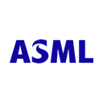

ASMLNASDAQ (ADR) · ASML Holding N.V.
Fair value por ADR (blend propio)
$1,643.28
vs. $1,495.16 mercado · +9.9%
POSTURA DEL ANÁLISIS: NEUTRAL — EL ADR CAYÓ 15% DESDE SEPTIEMBRE MIENTRAS LA COMPAÑÍA DECÍA QUE SU OFERTA DE 2027 Y 2028 NO ALCANZA PARA LA DEMANDA; EL BLEND QUEDA 9,9% POR ENCIMA DEL PRECIO — la reversión histórica y el consenso quedan arriba, los comparables y el DCF debajo; el DCF Base (US$1,075.03) sigue exigiendo un crecimiento mayor que el escenario de largo plazo de la propia compañía para llegar al precio (ver Sección 13)
Este documento es análisis independiente con fines informativos y educativos. El autor no es un asesor financiero registrado (no CFA / no matriculado ante la CNV/SEC) y este contenido no constituye una recomendación de compra, venta o mantenimiento para ningún lector en particular. Ver disclosure completo al pie.
Equipos de litografía para semiconductores: EUV (monopolio mundial, incluido High-NA), DUV, metrología y servicio de la base instalada (Installed Base Management)
ASML reportó, el 14 de octubre de 2026, ventas del tercer trimestre de €11.662 millones (+55,2% interanual), en el
extremo alto de su guía, con un margen bruto récord de 57,5% (por encima de lo guiado) y un margen operativo de
44,4%. La utilidad neta fue de €4.960 millones (€12,93 por acción), con una ganancia de €510 millones en inversiones
de capital. Para el cuarto trimestre guio €14.200–15.200 millones y mantuvo el año en €44.000–45.000 millones. Lo
más relevante fue el mensaje de demanda: los clientes siguen subiendo sus pronósticos, algunos quieren pedir equipos
para 2029 y 2030, y la compañía dice que su oferta planificada para 2027 y 2028 "no va a cubrir del todo" la
demanda. Los anticipos de clientes saltaron de €3.570 a €9.301 millones en el trimestre. El ADR cerró el 13 de
noviembre en US$1,495.16 (−15,3% desde septiembre); el blend pasa de US$1,550.45 (septiembre con la regla de pesos
vigente) a US$1,643.28.
Var. ventas (últ. trim.)
+55,2%
01 — Resumen Ejecutivo
El monopolio de la litografía dice que no le alcanza la capacidad — y el ADR bajó 15%
El 14 de octubre de 2026 ASML reportó ventas del tercer trimestre de €11.662 millones, +55,2% interanual y +25,0%
secuencial, con 113 sistemas nuevos y 8 usados vendidos y €3.289 millones de servicio y mejoras de la base instalada
(por encima de la guía). El margen bruto fue de 57,5% (51,6% un año antes) y el margen operativo de 44,4%. La
utilidad neta de €4.960 millones incluye una ganancia de €510 millones en inversiones de capital; sin ella, el EPS
del trimestre habría sido de ~€11,60 en lugar de €12,93.
El mensaje de Christophe Fouquet fue de demanda: los clientes "siguen aumentando sus pronósticos de equipos de corto
y mediano plazo" por el tamaño y la duración de las inversiones en IA, algunos quieren colocar pedidos para 2029 y
2030, y la oferta planificada para 2027 y 2028 no va a alcanzar. ASML ya planeaba subir 30% la capacidad de EUV de
baja apertura y DUV de inmersión en 2027, y estudia ampliar 2028 más allá de otro 30%. Los anticipos de clientes
(pasivos por contratos) pasaron de €3.570 a €9.301 millones en el trimestre y el flujo operativo del trimestre llegó a
€11.798 millones. La guía del cuarto trimestre es de €14.200–15.200 millones con margen bruto de ~57%; 2026 cierra en
€44.000–45.000 millones (+36% sobre 2025).
El ADR cerró el 13 de noviembre en US$1,495.16, 15,3% por debajo de septiembre y 25,2% por debajo de su máximo de 52
semanas. El blend de la Sección 13 da US$1,643.28, 9,9% por encima del precio: la reversión histórica
(US$1,697.01) y el consenso (US$2,114.00) arriba, los comparables (US$1,438.28) y el DCF (US$1,075.03) debajo. La
postura pasa de "neutral, con sesgo cauteloso" a neutral.
02 — Historia y Evolución
De una escisión de Philips al único fabricante de máquinas EUV del mundo
ASML nació en 1984 como joint venture de Philips y ASM International en Veldhoven, Países Bajos. Su apuesta de
décadas por la litografía de ultravioleta extremo (EUV), con socios como Zeiss (óptica) y Cymer (fuente de luz,
comprada en 2013), la convirtió en el único proveedor del equipo sin el cual no se fabrican los chips más avanzados
del mundo. La generación High-NA (EXE) extiende ese monopolio a los nodos de 2nm en adelante. Christophe Fouquet es
CEO desde abril de 2024.
Las ventas pasaron de €10.900 millones en 2018 a €32.700 millones en 2025, y la guía lleva 2026 a €44.000–45.000
millones. El consenso proyecta €57.350 millones para 2027 (+28,9%).
Ventas anuales en € miles de millones, 2018–2025, 2026 por la guía (punto medio) y 2027E de consenso. Fuente: 20-F, 6-K y stockanalysis.com.
03 — Modelo de Negocio y Segmentos
Sistemas nuevos más una base instalada que factura cada trimestre
ASML vende sistemas de litografía (EUV, DUV y metrología) y servicios y mejoras sobre su base instalada (Installed
Base Management, €3.289 millones en el tercer trimestre, 28% de las ventas). Los clientes están concentrados en pocos
fabricantes (TSMC, Samsung, Intel, SK hynix, Micron) y en tres geografías: Corea del Sur, Taiwán y China.
Ventas de sistemas por región, dato del 2T 2026 de la edición de septiembre (% del total). La compañía publica el desglose del trimestre en su presentación.
04 — Desarrollos Recientes y Perspectiva
Demanda por encima de la oferta para 2027 y 2028
El reporte del 14-oct-2026
Ventas de €11.662 millones, hacia el extremo alto de la guía, y margen bruto de 57,5%, por encima de lo guiado por el
mayor peso del servicio a la base instalada. El ADR subió 0,5% al día siguiente.
Capacidad: +30% en 2027 y más en 2028
ASML ya había anunciado una suba de 30% de su capacidad de EUV de baja apertura y DUV de inmersión para 2027. Con la
cartera de pedidos subiendo trimestre a trimestre, ahora dice que la oferta planificada para 2027 y 2028 no alcanza y
estudia ampliar 2028 más allá de otro 30%. Es la "demanda futura" que el DCF de la Sección 13 sobrepondera.
Anticipos de clientes y retorno de capital
Los pasivos por contratos subieron €5.730 millones en el trimestre: los clientes pagan por adelantado para asegurarse
turnos de producción. Eso infló el flujo operativo (€11.798 millones en el trimestre) y la caja. ASML recompró €4.071
millones de acciones en el trimestre dentro del programa 2026–2028 y pagó un dividendo interino de €1,88 por acción
el 4 de noviembre de 2026.
La guía del 4T 2026
Ventas de €14.200–15.200 millones (+51,3% interanual en el punto medio), margen bruto de ~57%, I+D de ~€1.200 millones
y gastos generales de ~€400 millones. 2026: €44.000–45.000 millones con margen bruto de ~56%.
05 — Estados Financieros
Margen operativo de 44% en el trimestre
Margen bruto trimestral, 3T 2025 a 3T 2026, y guía del 4T 2026 (~57%).
Ventas trimestrales en € miles de millones, 2T 2025 a 3T 2026, y punto medio de la guía del 4T 2026.
06 — Deuda y Balance
Caja neta de ~€10.800 millones, con anticipos de clientes adentro
La caja neta casi se duplicó, pero buena parte es plata de clientes por equipos que todavía no se entregaron: a medida
que esas máquinas se despachen, el anticipo se convierte en venta y deja de generar caja nueva.
07 — Flujo de Caja y Capital Allocation
Un flujo operativo inflado por anticipos — y €4.100 millones de recompras en un trimestre
El flujo operativo de ASML es muy volátil por los anticipos: un trimestre negativo (1T26) y dos de más de €11.000
millones. El margen de OCF TTM (57,6%) está inflado; sin el aumento de anticipos baja a 43,1%, y el de los últimos tres
años fiscales completos fue de ~33%. El DCF ancla el año 1 en 35%: por encima de esa media histórica, porque el margen
operativo subió (38,6% TTM), pero sin contar anticipos que se van a revertir.
Margen de flujo de caja operativo anual, FY2021–FY2025, y TTM al 3T 2026 con y sin el aumento de anticipos de clientes.
08 — Comparables de Industria
ASML frente a los otros grandes de equipos de semiconductores
P/E sobre el EPS de consenso 2027E (ASML convertido a dólares).
Sobre el EPS de 2027, el grupo de equipos cotiza entre 19x y 26x. ASML cotiza a 24,0x su EPS de 2027, apenas por encima del promedio del panel (23,1x), pese a ser el único con un
monopolio tecnológico.
09 — Gobierno Corporativo y Estructura Accionaria
Estructura holandesa de dos niveles, sin accionista de control
ASML mantiene la separación entre el Board of Management (seis ejecutivos, presidido por el CEO Christophe Fouquet) y
el Supervisory Board (presidido por Nils Andersen). No tiene accionista de control ni participación estatal; los
mayores tenedores son Vanguard (~8,9%) y Capital Group (~7,4%). La compensación del CEO en 2025 fue de €7,02 millones.
Marco Pieters es CTO desde octubre de 2025, tras el retiro de Martin van den Brink. No hubo cambios de gobierno desde
la edición de septiembre.
10 — Registro de Riesgos
Qué podría cambiar esta lectura
11 — Catalizadores
Agenda de eventos relevantes
12 — Modelo Financiero Proyectado y Momentum de Estimados
El consenso proyecta +29% de ventas en 2027
Guía de ventas 2026 de ASML a lo largo del año (€ miles de millones): inicial, tras el 1T, tras el 2T y tras el 3T (punto medio €44.500M).
13 — Valuación: Cuatro Métodos y el Fair Value
Con el ADR 15% más abajo, tres de cuatro métodos quedan cerca o por encima del precio
Cuatro enfoques —DCF, comparables, reversión histórica y consenso— con los pesos fijos del desk (DCF 15%, comparables
25%, reversión 35%, consenso 25%). Valuamos en euros y convertimos a dólares a 1,11. Todos los números salen de un
script (.claude/skills/informe-bigtech/modelos/asml/valuacion.py).
Qué cambió respecto de septiembre. Septiembre publicó un promedio simple de US$1,494.17; con los pesos
vigentes daba US$1,550.45. Esta edición da US$1,643.28 (+6,0%) con el ADR 15,3% más abajo. El DCF de
septiembre no se reproduce al centavo: con interpolación lineal el Base da US$843.48 (+2,4%) y con decaimiento
geométrico US$827.59 (+0,5%, con el mismo 77,3% del EV desde el valor terminal); esta edición usa la geométrica. La
reversión de septiembre sí se reproduce (43,3x y US$1,387.97 contra US$1,386.19).
Método 1 — Flujo de caja descontado (DCF), tres escenarios
Año 1 = 2027: €57.350 millones de consenso (+28,9%), anclado en la demanda que la propia compañía describe como
superior a su oferta para 2027 y 2028 (regla de sobreponderar la demanda futura). El crecimiento decae
geométricamente de 2028 a 2031. El margen de OCF del Base parte de 35% (el TTM sin anticipos es 43,1% y la media de
tres años, ~33%) y sube a 36%; el capex de 5,5% refleja la ampliación de capacidad. El WACC del Base se mantiene en
9,0% (costo de equity en euros de septiembre; esta edición no actualizó el rendimiento del Bund). Caja neta: €10.772
millones. Acciones: 383,6 millones.
El caso Base (US$1,075.03) queda 28,1% por debajo del precio (en septiembre, −53,3%). El promedio simple
de los escenarios es US$1,206.22 y el ponderado (25/45/30), US$1,214.50. El Bear no hace retroceder el margen de OCF
por debajo del nivel histórico; el Bull supera al mercado. El 77,3% del EV del Base viene del valor terminal.
Sensibilidad del caso Base: WACC × crecimiento terminal
Método 2 — Múltiplos de comparables (P/E 2027E)
El promedio del panel (AMAT 19,3x, LRCX 23,4x, KLAC 26,4x; 23,1x) aplicado al EPS de consenso 2027 de ASML en dólares
(€56,22 × 1,11 = US$62,40) da US$1,438.28, 3,8% por debajo del precio. El rango va de US$1,205.03
(AMAT) a US$1,648.92 (KLAC). En septiembre, por EV/EBITDA, el método daba US$1,599.10.
Método 3 — Reversión a la media histórica propia (ventana limpia)
Aplicado al EPS TTM sin la ganancia en inversiones (€33,67, US$37,37), el promedio de 45,4x da
US$1,697.01, 13,5% por encima del precio. El ADR cotiza a 40,0x ese EPS, por debajo de su media de
los últimos cuatro trimestres.
Método 4 — Consenso de Wall Street
Síntesis: los cuatro métodos, uno al lado del otro
"Football field" de valuación. La línea roja marca el precio del ADR (US$1,495.16); la azul, el blend ponderado (US$1,643.28).
El blend ponderado da US$1,643.28 por ADR, 9,9% por encima del precio (septiembre: −15,3%). Sin el
consenso daría US$1,486.37, en línea con el precio. La postura pasa a neutral: el valor estimado
subió 6,0% y el precio bajó 15,3%. El DCF sigue 28% debajo porque descuenta un negocio cíclico con supuestos de
crecimiento moderados después de 2027; el mercado y el sell-side apuestan a que el ciclo de la IA mantenga la demanda
por encima de la oferta varios años más.
14 — Limitaciones del Modelo
Qué asume este análisis, y dónde puede fallar
La valuación se hace en euros y se convierte a dólares a 1,11: un movimiento del tipo de cambio mueve el resultado
en dólares en la misma proporción. El WACC no se actualizó por tasas en euros. El 77,3% del EV del Base viene del
valor terminal. El margen de OCF del DCF excluye los anticipos de clientes, que inflaron el flujo reciente y se van a
revertir con las entregas. El DCF de septiembre no se reproduce al centavo (Sección 13). La reversión usa una
ventana con un trimestre de 57x. El método de comparables cambió de EV/EBITDA a P/E 2027E. La mezcla por región del
gráfico es del 2T 2026. Ningún método incorpora el riesgo de controles de exportación de forma directa.
Documento elaborado a partir de fuentes públicas: SEC EDGAR (Forms 6-K y 20-F de ASML Holding N.V., CIK 0000937966),
comunicados y presentaciones de ASML, S&P Global Market Intelligence, stockanalysis.com, Yahoo Finance y prensa
financiera especializada. Cifras con fecha de corte en el 6-K del 14-oct-2026 (trimestre cerrado el 27-sep-2026);
precio del ADR, EUR/USD y precios de comparables al cierre del 13-nov-2026; consenso al 15-nov-2026.
Sobre el autor y la naturaleza de este documento: este informe es un análisis independiente
elaborado por Manfredi Investment Research & Markets con fines exclusivamente informativos y educativos. El autor
no es un asesor de inversión registrado, no está matriculado ante la Comisión Nacional de Valores (CNV), la SEC, ni
ningún otro organismo regulador equivalente, y no mantiene una relación de asesoramiento financiero personalizado con
el lector. Ninguna cifra de este documento —incluido el "fair value" de portada, los escenarios de DCF, ni la
síntesis de la Sección 13— constituye una recomendación de compra, venta o mantenimiento para ningún lector en
particular, ni considera la situación financiera, los objetivos o el perfil de riesgo individual de quien lo lee. Los
escenarios de DCF son estimaciones propias sujetas a los supuestos declarados explícitamente en la Sección 13, y no
representan guidance oficial de ninguna de las compañías mencionadas salvo donde se cita de forma directa y
atribuida. Verificar cifras contra el 6-K/20-F más reciente de la compañía, y consultar a un asesor financiero
matriculado, antes de tomar cualquier decisión de inversión.